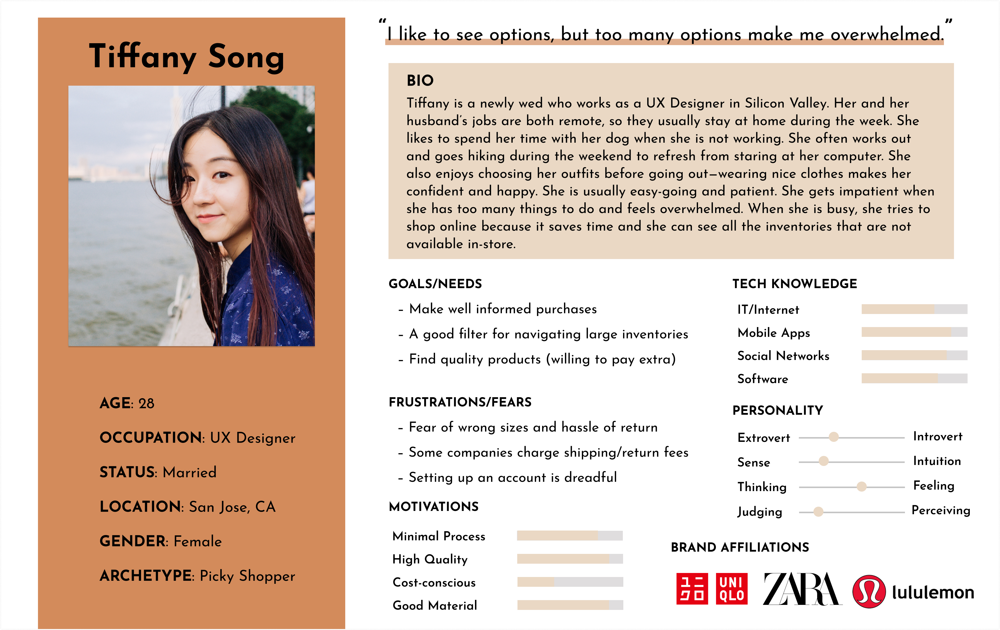
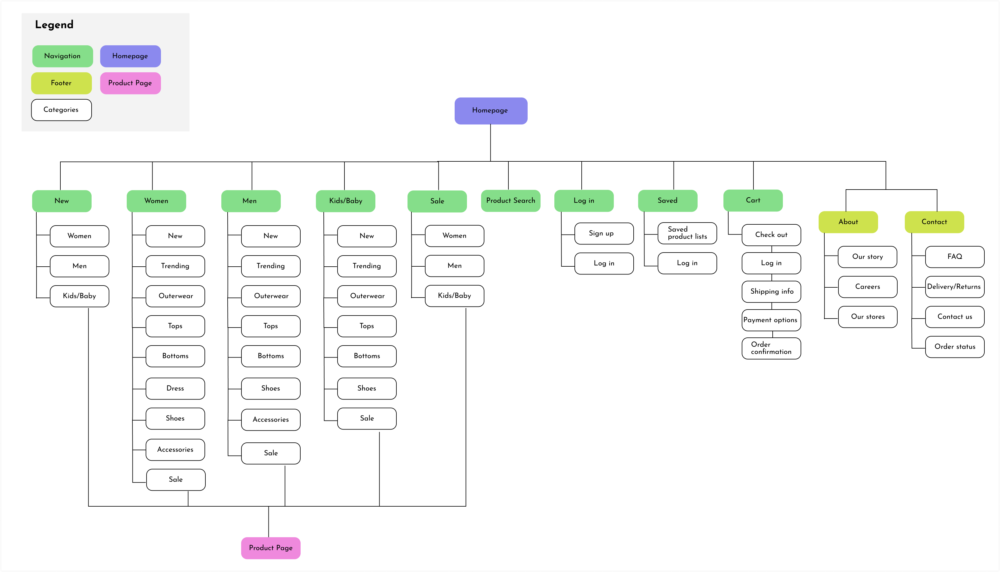
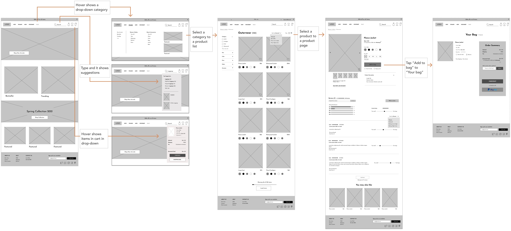
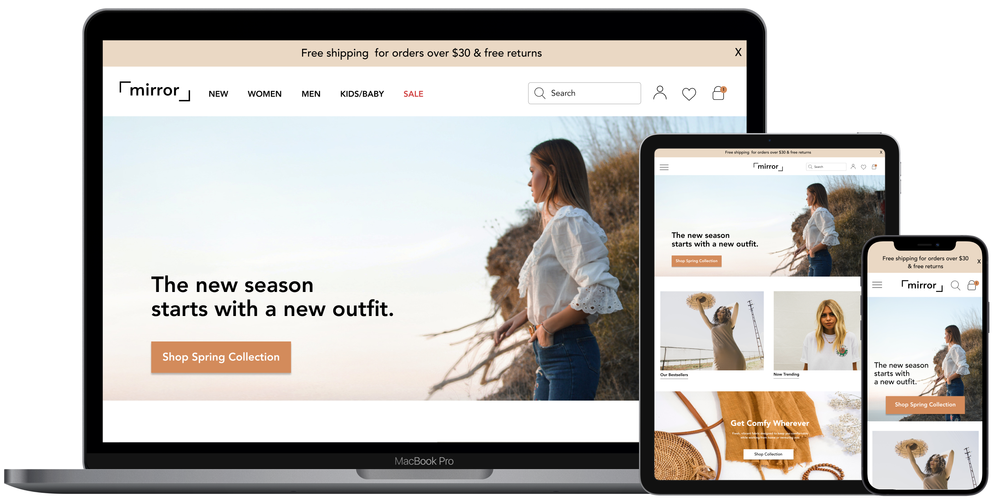

What is Mirror?
Mirror is a successful clothing brand founded in 1994. They own more than 400 physical stores worldwide.
Their target audience is people of all ages who care about affordable yet decent quality clothing.
Objectives
Design a responsive e-commerce website that enables Mirror to sell their products to a broader
audience and sell their leftover inventory.
Design a good filter function so that users can easily filter through Mirror’s large catalog.
Client:
Mirror (fictional)
Roles:
UX/UI designer & researcher
Tools:
Figma, Optimal Workshop, Miro, Whimsical
Competitive Analysis
I started by researching Mirror's competitors in order to understand who the competitors are and what
they are doing differently.
It mainly helped me to understand how each business establishes its brand identity and what is focuses on.

1:1 User Interviews
I conducted user interviews with 5 individuals aged 20-55 who purchased clothes online in the past three
months.
I wanted to collect qualitative data so that I can understand the users more.
I was able to collect useful information about their shopping habits and the problems they encounter
when shopping online.
I learned that the majority of participants prefer in-store shopping to see the products and sizes
in-person.

Persona
Based on the research results, I created a persona that addresses the major user needs.
Since the majority of participants mentioned that they prefer in-store shopping, I decided to design
the website so that they can enjoy shopping as much as they do in-store.

Card Sorting and Site Map
Since there are so many categories/subcategories, I decided to do card sorting testing so that users
can find items easily.
I recruited 7 individuals aged 23-50 to participate in a card sorting test to see how they categorized
each card.
From the findings, I was able to make a site map of how information should be categorized within the
website.

User Flow
After creating a persona, I created a user flow to better understand and empathize with the users.
This process helped me to form my idea of how the website should look and what features are
important to have.

Wire Flows
I created lo-fi wireframes to visualize the website. It helped me to focus on user flows rather
than the UI. I made sure that users can easily find the shipping/returns policy since it is the main concern for my persona.
I also kept the drop-down menu simple so that users can easily navigate the site.
I learned from my user interviews that a lot of people use categories to find what they're looking for.

Hi-Fi Responsive Design
I made hi-fi UI designs for both desktop and mobile based on the wireframes and color palette.
I also went back to check if the design was successful in meeting the needs of my persona.
I wanted to make the flow really easy since I thought the large catalog might overwhelm users, which some of the participants mentioned in the user interviews.
At the result, I was able to use the colors wisely to make important pieces prominent and put everything where users expect them to be.


Prototype and Usability Test
View Prototype
I conducted usability tests with 5 individuals aged 24-28 including both frequent and infrequent
shoppers.
My objectives were:
Understand overall impressions of the website
Observe the interactions users make to navigate the website
Determine if the design delivers a clear message to users
Affinity Map
I synthesized the user test results and created an Affinity Map.
It helped me to understand the successes, frustrations, and necessary improvements to deliver better
experiences.

Priority Revision
View Prototype
I made revisions on the design based on the feedback I received from participants in my usability test to make
the website more intuitive.
I made the search box bigger since it looked cramped and made users not want click on it.
I moved "Spring Collection" into the Hero image so that it doesn't overlap with "New Arrivals".
